梅吉の拳とロカボダイエット [梅吉]
２個目のおもちゃが届きました。
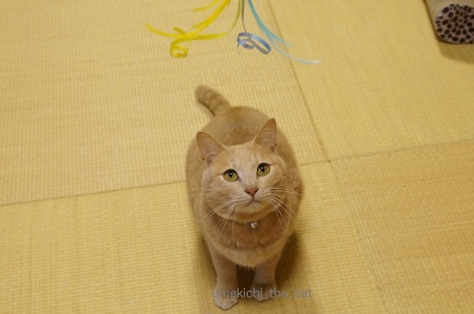
やっぱり食い付きが違います。おかーさんはうれしいですよ。
梅吉さんは興奮して・・・・・
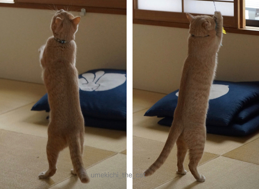
立ち上がる！
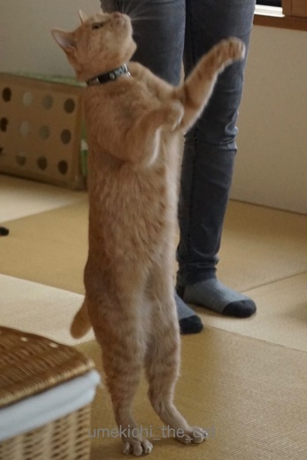
立ち上がる！！
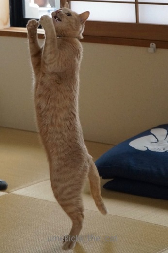
立ちっぱなしです！！！
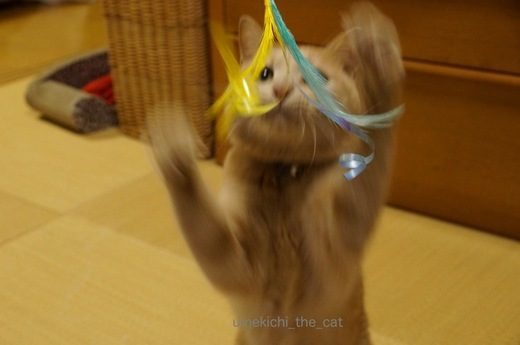
![[猫]](https://blog.ss-blog.jp/_images_e/101.gif) あたたたたたたたたたーーーーーっ！
あたたたたたたたたたーーーーーっ！
出ました梅吉拳です！
もう羽が二枚も取れちゃいました。
瞬殺は免れたけれど時間の問題みたいです。
 ↑ガブッと一押し↑
↑ガブッと一押し↑
最近よく耳にする糖質制限ダイエット、ローカーボダイエット。
low（低い）carb（炭水化物）で炭水化物を食べないでダイエットしましょう！というものです。
炭水化物大好きだし、今の所制限する必要もないしと思っていたら
先日血液検査を受けたおっとの中性脂肪値が・・・・ありゃ〜でした。
原因はウィークデイのランチのラーメンやらその他の麺類や丼ものと
日々摂取しているアルコールにあると思うのですが・・・
そのおっとがロカボダイエットをすると言い出しました。
徹底的に炭水化物を摂取しないのは日々の生活で無理があるので
できる範囲でなるべく炭水化物を減らしましょうというゆるいダイエットを
ローカーボダイエットと区別してロカボダイエットと言うらしい。
糖質を制限した食品ばかりを扱ったサイトがあったりするのですが
身近なところではLAWSONが糖質を低く抑えた食品を扱ってます。
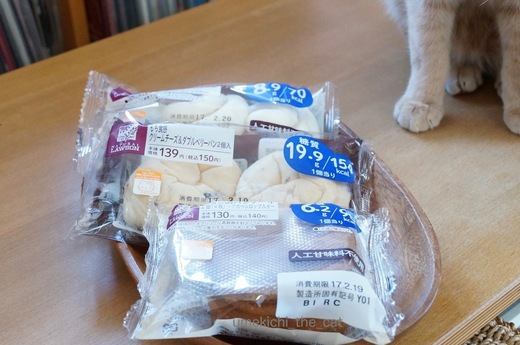
こんな風に表に青字で大きく糖質量やカロリーを表示。
パンの他にもケーキやクッキーなどのスィーツもあってなかなかの品揃えです。
我が家はもともと夕食に白いご飯を食べないので問題ないとして
ウィークデイのランチと週末の食事を気をつけるようにおっとにはがんばってもらいます。
体に悪い話ではないのでわたしも週末は糖質制限にお付き合いしようかな。
日々のおやつも（これはやめられない！）低糖質の物にして・・・・
あ、もちろん二人ともここぞ！というときには我慢なんてしませんよ。
今後もおいしく食事を楽しむために、日々少し節制をしようというお話でした。
余談ですが自分の中性脂肪値をSNSでアップしたおっと。
友人らから「俺の方が悪い。」「いやいや俺はもっとすごい！」と反応があったらしいです。
なかには500台の猛者も！
悪すぎる数値に安心しないよう強く言っておきましたよ( ･̆ˍ･̆ )
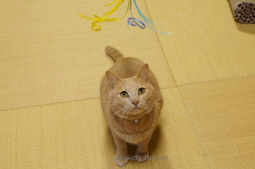
やっぱり食い付きが違います。おかーさんはうれしいですよ。
梅吉さんは興奮して・・・・・
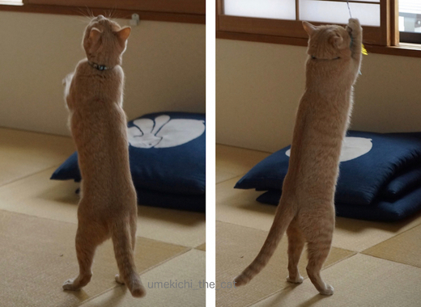
立ち上がる！
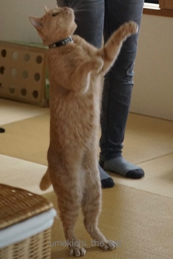
立ち上がる！！
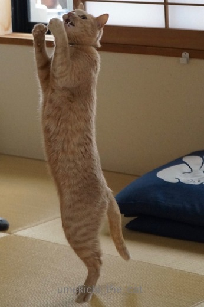
立ちっぱなしです！！！
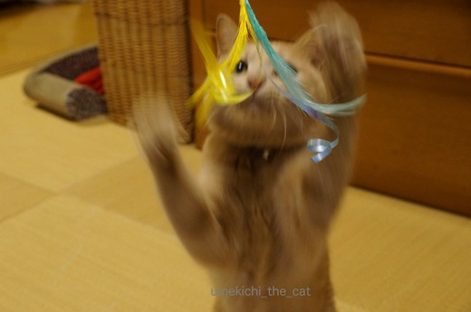
出ました梅吉拳です！
もう羽が二枚も取れちゃいました。
瞬殺は免れたけれど時間の問題みたいです。
最近よく耳にする糖質制限ダイエット、ローカーボダイエット。
low（低い）carb（炭水化物）で炭水化物を食べないでダイエットしましょう！というものです。
炭水化物大好きだし、今の所制限する必要もないしと思っていたら
先日血液検査を受けたおっとの中性脂肪値が・・・・ありゃ〜でした。
原因はウィークデイのランチのラーメンやらその他の麺類や丼ものと
日々摂取しているアルコールにあると思うのですが・・・
そのおっとがロカボダイエットをすると言い出しました。
徹底的に炭水化物を摂取しないのは日々の生活で無理があるので
できる範囲でなるべく炭水化物を減らしましょうというゆるいダイエットを
ローカーボダイエットと区別してロカボダイエットと言うらしい。
糖質を制限した食品ばかりを扱ったサイトがあったりするのですが
身近なところではLAWSONが糖質を低く抑えた食品を扱ってます。
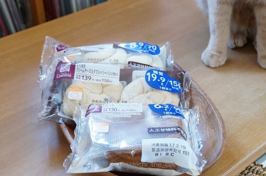
こんな風に表に青字で大きく糖質量やカロリーを表示。
パンの他にもケーキやクッキーなどのスィーツもあってなかなかの品揃えです。
我が家はもともと夕食に白いご飯を食べないので問題ないとして
ウィークデイのランチと週末の食事を気をつけるようにおっとにはがんばってもらいます。
体に悪い話ではないのでわたしも週末は糖質制限にお付き合いしようかな。
日々のおやつも（これはやめられない！）低糖質の物にして・・・・
あ、もちろん二人ともここぞ！というときには我慢なんてしませんよ。
今後もおいしく食事を楽しむために、日々少し節制をしようというお話でした。
余談ですが自分の中性脂肪値をSNSでアップしたおっと。
友人らから「俺の方が悪い。」「いやいや俺はもっとすごい！」と反応があったらしいです。
なかには500台の猛者も！
悪すぎる数値に安心しないよう強く言っておきましたよ( ･̆ˍ･̆ )

カフェオレ色の梅吉

梅吉 2023年8月10日 永眠


梅吉と出会った譲渡会

犬猫の理由なき殺処分ゼロ
妄想広告
UMEKICHI 光

爆発的に早い！
時々攻撃的！
Thanks to Mr.Boss365
爆発的に早い！
時々攻撃的！
Thanks to Mr.Boss365

次のオモチャも時間の問題っぽいですね(笑)
こんなに立ち上がって喜んでくれるなんてねぇｗｗ
ママ手作りのおもちゃも、このくらい喜んでよぉー！(笑)
by リュカ (2017-02-21 17:20)
リュカさん＞本当に・・・おかーさんの愛は市販のおもちゃに負けた、と思いましたよ。涙
おもちゃは壊れちゃう前に早く対策しなきゃ！なのです。
100均！手芸コーナー！！行かなきゃ〜。
by ちぃ (2017-02-21 17:54)
立ち姿が美しいですねー。
二足歩行の日も近そうです!
by zombiekong (2017-02-21 18:56)
新しいオモチャ、出した途端に飛び掛かってきますよね^^;
梅吉さん、そろそろお腹のチャック開けて中にいる人紹介してもいいんじゃないですか(*^▽^*)
白ごはんだけでも平気な我が家、ロカボとは程遠い生活です・・・。
by ゆきち (2017-02-21 19:12)
梅吉さんのタッチ姿はスマートで格好良いですね。
元々のダイエットの意味は健康のために日々の食事などを気をつけるというようですから、ピッタリですね。
大きなダイエットではなくて、毎日少し気をつけるというのは私も実行しています。
私の場合は小麦粉に注意です。
by kiki (2017-02-21 21:31)
梅吉さん、二足歩行もできそうですね
by 粋田化石 (2017-02-21 21:45)
梅吉さんの立ち姿、カッコイイです♪ ^^)
ダイエットか～。私もボチボチしなくては。
・・・・暖かくなったら運動しようかな。^^;←ｿﾉｶﾝｶﾞｴｶﾞｱﾏｲ
by yes_hama (2017-02-21 21:49)
梅吉さん、スタイルいいわ～(≧▽≦)
おなかのモフモフがたまりません♥
by でんさん (2017-02-21 23:53)
おおー！！
楽しそうにしてますねー梅吉くん！！
by sumi-cyan (2017-02-21 23:54)
パンの横の梅吉さんのあんよに萌え〜(^^;
術後にバーンと体重が落ちたので、
｢少々戻しながらゆる〜く維持｣と思って糖質には気をつけています。
コンビニでも、おにぎりの替わりにサラダチキンやゆで卵を
買うことにしてます〜。
by も〜 (2017-02-22 02:32)
zombiekongさん＞猫背ってなによ！というくらい背筋が伸びてますよねー笑
梅吉の立ち姿に猫族の「進化」をみたような気がします・・・
ゆきちさん＞おもちゃ、袋から出すのも大変でした。
もうイラチ全開で開封作業が進まないっちゅーの！
中の人は梅吉の皮を被っているときは元気いっぱいなんですが
脱ぐと恥ずかしがり屋さんなのかなかなかお目にかかれません＾＾
白ご飯のみ、潔いわ〜笑
日本人に良くないのは小麦なんですよね！
kikiさん＞ダイエットがうまく行った梅吉はスレンダーな姿を
惜しげも無く披露できるようになりました。笑。おっとは如何に＾＾
私もお米ではなく小麦粉に原因あり、と思っています。
普段はなるべく我慢しなくっちゃ！
でも、粉もん（パンやパスタ、ピザも含めて）美味しいですよね〜。
粋田化石さん＞ふふ、このまま練習を続けて梅吉と巡業に出ようかしら・・・笑
yes_hamaさん＞梅吉、すっくと立ってますよね。やればできる子。笑
今日はケーキ食べてもいいよね、今日は昼からワイン開けちゃおう！
ガマンは明日から・・・・をなるべく減らすべく葛藤の日々です(*ΦωΦ)
でんさん＞梅吉は手足が長くて顔がちっさくてね〜（親バカです）
羨ましいんです！
平均的日本人体型のわたしは代わってほしいわ〜と思ってます。
あ、でもお腹モフモフされたらダンゴムシからのケリケリですよヽ(•̀ω•́ )ゝ✧
sumi-cyanさん＞本当に楽しそうに遊ぶんですよ！このおもちゃ。
運動不足解消にももってこいで〜す。
も〜さん＞おお、も〜さんも気をつけていらしたのですね。
今まであまり気にしたことなかったのですが
コンビニのお惣菜やおべんとうにはカロリーの他に
糖質、塩分、脂質の表示がされているものがたくさんあるんですね。
うまく利用して行かなくちゃと思いました。
パン横の梅吉の足、さすが目のつけ所が違いますわ！Ｏ(≧▽≦)Ｏ
by ちぃ (2017-02-22 07:43)
普段頑張って走ってるのに、高血圧気味な私。。。
体質なんでしょーかねー？
なんか悔しいわ(^_^;)
by よーちゃん (2017-02-22 08:22)
すごい！梅吉君、二本足で立ってますね！
後ろ向きですが「お願い」ポーズまで！
歩き出す日も遠くない…(中のオッチャン発動？
ご飯が白くない我が家(ムギ入り)。ご飯はあまり食べないのでお酒を減らすべきだとわかってはいるのですよ(テヘ。うちの旦那は高血圧アンド高コレステロールらしいです。
by BillK-ko (2017-02-22 10:05)
梅吉さんの二本足立ち見事ですねぇ～
うちは夫がコレストロールが高いと言われてしまいました(>_<)
恐らく原因はカップ麺ですね。
それと以前よりお魚が減った事かな・・・
アメリカで美味しいお魚を入手するのは結構大変です。
お互いにゃんこの為にも猫父さんには元気でいてもらわないとですね＾＾
by Moon (2017-02-22 10:28)
梅吉さん、もうすぐ人間になるんじゃない？
毛皮脱いでおっさん出て来たらいやだなあ・・・
by じゅらまろ (2017-02-22 11:16)
立ち姿が可愛すぎます～♪
二足歩行しちゃいそうですね(#^.^#)
by きぃ (2017-02-22 11:51)
よーちゃん＞あらら〜、そんなにきちんと運動していてもなんですね・・・
でも、運動の効果はウン十年後に出るかもですよ！
おじいちゃんになったとき「すごい！３０歳くらいの血圧ですよ！！」
って褒められるかも。
BillK-koさん＞そう！立つだけじゃなく歩くのが目標よ！！
目標達成されたら巡業に出るから見に来てね！笑
ああ、高血圧＆高コレステロールはお酒がらみだわね〜。
皆んな分かっちゃいるのよ。でも、にんげんだもの。笑
Moonさん＞美味しいお魚が入手しにくいのは大変ですね。
でも、カップ麺は手に入るのね！アメリカらしいわ〜。
学生時代にサン・ノゼにホームステイしていたことがあるのだけれど
ホストファミリー宅の食事が肉！肉！！肉！！！でねー。
付け合わせのお野菜もほとんどなくて辛かったわw
じゅらまろさん＞だ、だいじょうぶよ・・かわいいおっさんが出てくるんだから・・・・
たぶんね。
きぃさん＞うちの近所に散歩は二足歩行のわんこがいるのですよ。
対抗したいと思ってマス=´ᆺ`=
by ちぃ (2017-02-22 15:30)
梅吉さん、美しい立ち姿ですねぇ♪( ´▽｀)
こんなに気に入ってもらえるとおもちゃを買ってきた甲斐がありますよね=(^.^)=
ダイエット、食いしん坊の私も何年か前の健康診断でひっかっかってしまい、
食べるのを我慢するのは辛いので、食べた分を消費しようとRUNを始めましたw
by ニッキー (2017-02-22 19:43)
ニッキーさん＞ニッキーさんのように体を動かそう！という方向に行かないのが
我が家らしいからも・・・せいぜいウォーキングくらい^^;
おもちゃは、あきっぽい猫様にしてはめちゃくちゃ盛り上がって
遊ぶ日々が続いています。
嬉しい限り〜♪
by ちぃ (2017-02-23 15:21)